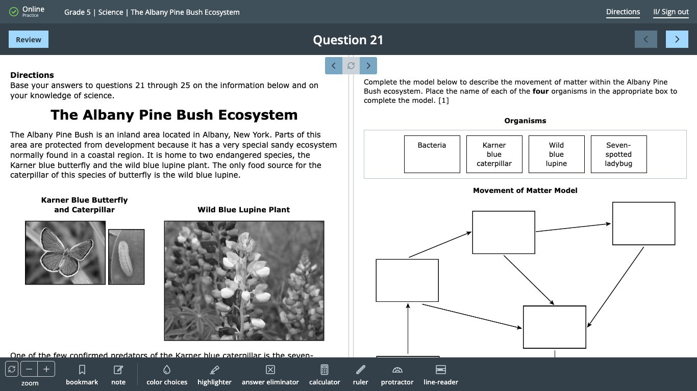
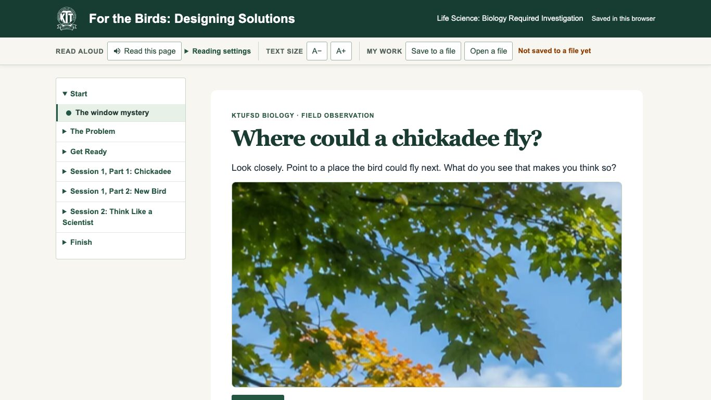

ScienceFor Students
KTUFSD Science Resources for Students
Practice for the state science test and work through science investigations. No sign-in needed.
Your teacher will tell you which one to use.
Practice for grades 3 to 8
NYS Science Test Practice
Practice science test questions on a screen like the computer-based state test. Most questions come from past state tests.
- Pick your grade, then pick a set of questions
- Use test tools like the highlighter, calculator, ruler, and line reader
- When you finish, see your score and how written answers are scored

Biology · Required investigation
For the Birds
Why do birds fly into windows? Study the problem, then design and test a way to keep birds safe.
- This takes more than one class
- At the end of class, click Save to a file
- Next class, click Open a file and choose the file you saved
- Read aloud and text size buttons are at the top
